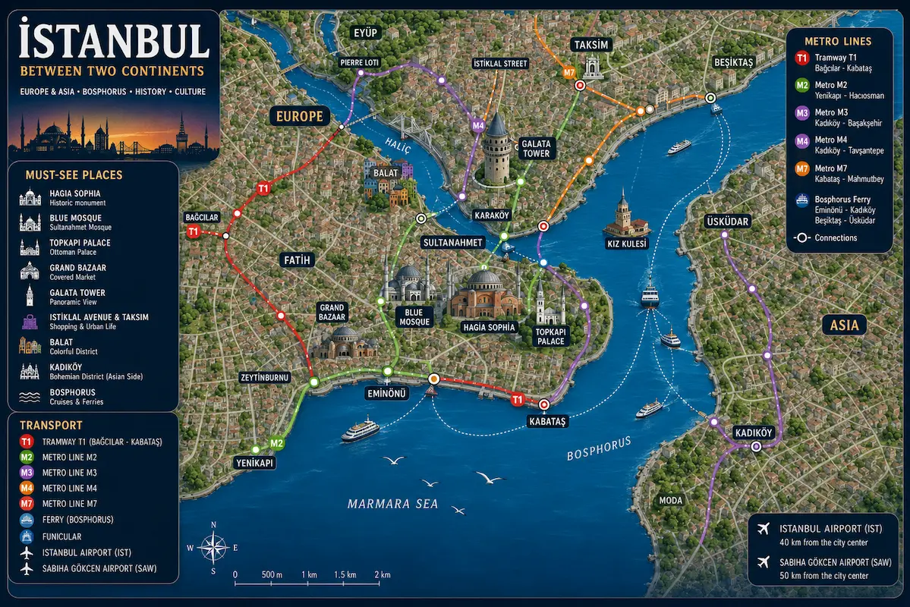
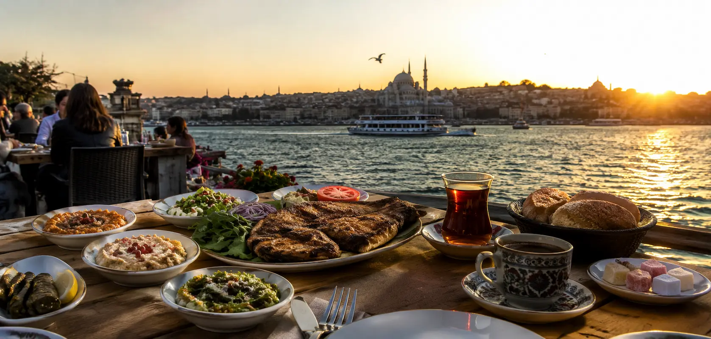

Istanbul
Between Two Continents
Discover a unique city where Europe meets Asia, between the Bosphorus, Ottoman palaces and vibrant bazaars.
Cross the Bosphorus in just a few minutes and experience two continents within a single city.
Admire palaces, mosques and historic districts from one of the world's most beautiful straits.
Balık ekmek, kebabs, meze, baklava and traditional tea houses bring every neighbourhood to life.
Hagia Sophia, the Blue Mosque, Topkapi Palace and the Grand Bazaar reveal centuries of history.

Istanbul is far more than its mosques and palaces. Here, every moment becomes an experience: sailing between two continents at sunset, unwinding in a historic hammam, creating your own perfume, enjoying dinner on the Bosphorus or tasting the flavours of two cultures. Memories like these give the city an atmosphere unlike anywhere else in the world.

As the minarets light up and the sun sets behind the Ottoman palaces, Istanbul reveals one of its most spectacular sights. From a luxury yacht, watch Europe and Asia come together across the water in an elegant and unforgettable setting.
🌅 View the cruise →
Spend an evening combining local cuisine, traditional music and folk dances while Istanbul's iconic landmarks glide past under the city lights. A romantic and festive experience in the heart of the Bosphorus.
🍽️ Discover the evening →
Steam, a traditional scrub and a relaxing massage await in one of Istanbul's historic hammams. Discover a centuries-old ritual where time seems to stand still and Ottoman wellness traditions come to life.
🛁 Choose your hammam →
Combine colourful pieces inspired by Ottoman art to craft an authentic Turkish mosaic lamp. A fun and creative activity that lets you take home a unique handmade souvenir.
🎨 Discover the workshop →
Choose from dozens of fragrances inspired by spices, flowers and Eastern traditions before leaving with your own personalised perfume. A meaningful souvenir that will remind you of Istanbul long after your trip.
🌸 Create your perfume →
Cross the Bosphorus by ferry and discover local markets, traditional specialities and the flavours that define Istanbul. More than twenty tastings await across Europe and Asia for an unforgettable culinary adventure.
🥙 Explore the flavours →
Enjoy a Turkish dinner overlooking illuminated domes and minarets. Combining local cuisine, breathtaking views and an intimate atmosphere, this rooftop experience offers a different perspective on Istanbul after sunset.
🌇 View the experience →With its modern metro, tram network, Bosphorus ferries and the Marmaray tunnel linking Europe and Asia, Istanbul is easy to explore without a car.
The metro, T1 tram and Marmaray line provide quick access to Sultanahmet, Galata, Taksim, Kadıköy and Üsküdar.
Explore the network →Available at the main metro stations, the Istanbulkart can be used on the metro, trams, buses, ferries, Metrobus and Marmaray. It is the easiest and most affordable way to explore Istanbul.
Ferries are part of daily life for Istanbul's residents and offer one of the most scenic ways to admire the city from the water. Crossing between Europe and Asia becomes an unforgettable experience in itself.
View ferry routes →After a long flight, a private transfer is the easiest way to reach your accommodation without waiting for a taxi or navigating public transport. A comfortable option, especially for your first visit to Istanbul.
Book your transfer →The perfect neighbourhood for a first visit to Istanbul. Hagia Sophia, the Blue Mosque, the Basilica Cistern and Topkapi Palace are all within walking distance, surrounded by centuries of history.
Centered around its iconic tower, Galata combines steep streets, elegant cafés, art galleries and spectacular views over the Golden Horn. An excellent choice for experiencing Istanbul's vibrant and creative atmosphere.
The lively modern heart of the city. With Istiklal Avenue, rooftop bars, restaurants, nightlife and entertainment venues, this district is perfect for travellers who want to enjoy Istanbul late into the night.
A trendy waterfront district along the Bosphorus, known for its stylish cafés, excellent restaurants, elegant hotels and easy access to Galata. Young, urban and full of character.
On the Asian side, Kadıköy offers a more local atmosphere with markets, restaurants, bars, ferries and scenic waterfront walks. A great choice for discovering a different side of Istanbul away from the busiest tourist areas.
Stretching along the Bosphorus, these neighbourhoods are loved for their lively atmosphere, waterfront terraces, Ottoman palaces and beautiful bridge views. Ideal for an elegant stay by the water.
From the historic hotels of Sultanahmet to the stylish addresses of Karaköy, the vibrant streets of Taksim, the Bosphorus waterfront and the local atmosphere of Kadıköy, Istanbul offers a wide variety of neighbourhoods to suit every style of trip.
From lively taverns and Bosphorus rooftop terraces to spice-scented markets and centuries-old cafés, Istanbul is also a city to discover through its cuisine. Every meal tells a story, blending Ottoman traditions with influences from both Europe and Asia.

Taking in Istanbul from above is one of the city's greatest pleasures. Surrounded by domes, minarets and the illuminated Bosphorus, dinner on a rooftop turns every evening into a memorable experience.
🌇 Book the experience →Saffron, Turkish delight, tea, dried fruits, pistachios and the scents of the Orient... The Spice Bazaar is one of Istanbul's most colourful and delicious places to explore.
Explore the market →Few experiences compare to dining beside the Bosphorus while ferries glide across the strait. Grilled fish, meze and sunset views combine for one of Istanbul's finest culinary moments.
Discover Lacivert →Take a break with an authentic Turkish coffee served alongside traditional Turkish delight in one of the city's historic cafés. A timeless experience recognised by UNESCO as part of the world's intangible cultural heritage.
Discover Mehmet Efendi →Gather around a table filled with meze, fresh seafood and Turkish specialities in a traditional meyhane. With music, conversation and shared dishes, it is one of Istanbul's most authentic dining experiences.
Discover Asmalı Cavit →Enjoy a traditional Turkish dinner before attending a Whirling Dervish ceremony, one of Istanbul's most iconic spiritual traditions. A unique evening combining gastronomy, music and Sufi culture.
🕌 Book the experience →Once the capital of three empires, Istanbul reveals an extraordinary heritage where imperial palaces, majestic mosques, centuries-old bazaars and underground treasures tell more than two thousand years of history. These iconic landmarks are among the essential places to visit on a first trip.

Discover Istanbul's two most iconic monuments before exploring the historic streets of Sultanahmet. A fascinating journey through the city's Byzantine and Ottoman heritage.
🕌 Explore the Old City →
Home to the Ottoman sultans for nearly four centuries, Topkapi reveals its courtyards, gardens, imperial treasury and famous Harem, a powerful symbol of the Ottoman Empire.
🏰 Discover the palace →
Beneath the streets of Istanbul lies a mysterious world of ancient columns, atmospheric lighting and the famous Medusa heads. A surprising and spectacular place to explore.
💧 Visit the cistern →
Built along the Bosphorus, this palace impresses with its lavish halls, monumental chandeliers and architecture blending European and Ottoman influences. A true nineteenth-century masterpiece.
👑 Explore Dolmabahçe →
Explore secret passageways, hidden courtyards and the rooftops of the Grand Bazaar on an original tour that reveals one of the world's oldest covered markets from a completely different perspective.
🛍️ Explore the Grand Bazaar →
Just a short distance from Istanbul, the Princes' Islands offer a refreshing escape among historic villas, quiet coves, pine forests and waterfront walks along the Sea of Marmara. An ideal day trip to discover another side of the city.
⛴️ Discover the islands →In Istanbul, sport is far more than entertainment: it is a true passion. From the fiery stands of Galatasaray and the unique atmosphere of Beşiktaş to Fenerbahçe supporters on the Asian side and major EuroLeague nights, the city brings millions of fans together throughout the year.

RAMS Park is renowned for offering one of the most intense atmospheres in European football. Supporters' chants and major derby nights turn every match into a true spectacle.
🦁 Official website →At Tüpraş Stadium, Beşiktaş supporters create an electric atmosphere beside the Bosphorus. The intensity in the stands makes every match an unforgettable experience.
🦅 Official website →On the Asian side, Fenerbahçe brings together some of Turkey's most passionate supporters. Attending a match at Şükrü Saracoğlu Stadium reveals another side of Istanbul's football culture.
💛💙 Official website →Istanbul is one of the major centres of European basketball. EuroLeague games, especially those featuring Anadolu Efes or Fenerbahçe Beko, combine outstanding sporting quality with an impressive atmosphere.
🏀 Official website →Istanbul is an excellent gateway to many of Turkey's other treasures. Whether for a day trip or a short getaway, discover peaceful islands, mountain landscapes, major historic sites or the magical scenery of Cappadocia. Each experience adds a new dimension to a journey through the country's largest city.
Just a few kilometres from Istanbul, the Princes' Islands offer a peaceful escape among historic villas, waterfront walks, seafood restaurants and traffic-free streets. An ideal day trip for slowing down.
🏝️ Discover the islands →
Discover the former Ottoman capital, explore its historic monuments and then take the cable car for spectacular panoramic views over Mount Uludağ.
🏔️ Explore Bursa →
With its lake, waterfalls, green forests and peaceful villages, this escape is perfect for enjoying a day outdoors and discovering a more natural side of Turkey away from Istanbul's busy streets.
🌿 Discover the excursion →
Travel back through history at two legendary sites. From the battlefields of Gallipoli to the ruins of ancient Troy, this two-day excursion offers a fascinating journey into the past.
🏺 Explore Gallipoli & Troy →
Complete your journey with two days in one of Turkey's most beautiful regions. Sculpted valleys, cave settlements and hot-air balloons at sunrise create an absolutely unforgettable experience.
🎈 Discover Cappadocia →Turkish is the official language. English is fairly common in hotels, restaurants and tourist areas, but learning a few words such as “merhaba” or “teşekkürler” can make everyday interactions easier.
The local currency is the Turkish lira. Bank cards are widely accepted, but it is useful to carry some cash for small shops, markets, cafés and public transport top-ups.
The metro, tram, Marmaray and ferries help you avoid much of the city's traffic. A rechargeable Istanbulkart makes travel easier and allows you to move smoothly between the European and Asian sides.
Four to five days allow enough time to explore Sultanahmet's monuments, the districts of Galata and Karaköy, the Asian side and the Bosphorus without rushing from one attraction to another.
Spring and early autumn usually offer the most pleasant conditions for walking, cruising along the Bosphorus and enjoying outdoor terraces. Summer can be hot and very crowded.
Clothing that covers the shoulders and legs is recommended when entering mosques. Shoes must be removed, and women may be asked to cover their hair in certain places of worship.
Use official taxi ranks, vehicles booked through your accommodation or trusted apps. Make sure the meter is running and follow the route to avoid unnecessary detours.
Istanbul is enormous, and traffic can make journeys much longer than expected. Group your visits by neighbourhood and rely on the tram, metro, Marmaray or ferries whenever possible.
Mosques remain active places of worship and may temporarily close to visitors during prayer times. Wear appropriate clothing and respect the peaceful atmosphere.
Bargaining is part of the experience in many Grand Bazaar shops. Compare offers, stay friendly and only buy when both the price and quality genuinely suit you.
The historic centre is convenient, but Kadıköy, Karaköy, Beşiktaş and Balat offer a more varied, local and often more interesting food scene.
Staying only on the European side means missing an essential part of Istanbul. Kadıköy, Moda and Üsküdar offer markets, cafés, waterfront walks and a more everyday local atmosphere.
Four to five days is a good amount of time to explore the main landmarks, cruise along the Bosphorus, discover several neighbourhoods and spend a few hours on the Asian side.
Sultanahmet is ideal for travellers who want to stay close to the main monuments. Karaköy and Galata offer more restaurants and nightlife, while Kadıköy provides a more local atmosphere.
Yes. The metro, tram, ferries and Marmaray efficiently connect the main districts. Driving is generally not recommended because of traffic and limited parking.
Yes. Ferries and the Marmaray make it easy to cross the Bosphorus quickly. The ferry remains the most enjoyable option for admiring Istanbul's skyline from the water.
It is best to plan ahead for Hagia Sophia, Topkapi Palace, Dolmabahçe Palace and the Basilica Cistern, especially on weekends and during busy travel periods.
Yes. Ferry rides, palaces, parks, craft workshops and the Princes' Islands offer many family-friendly experiences. Pushchairs can be less convenient in steep and crowded streets.